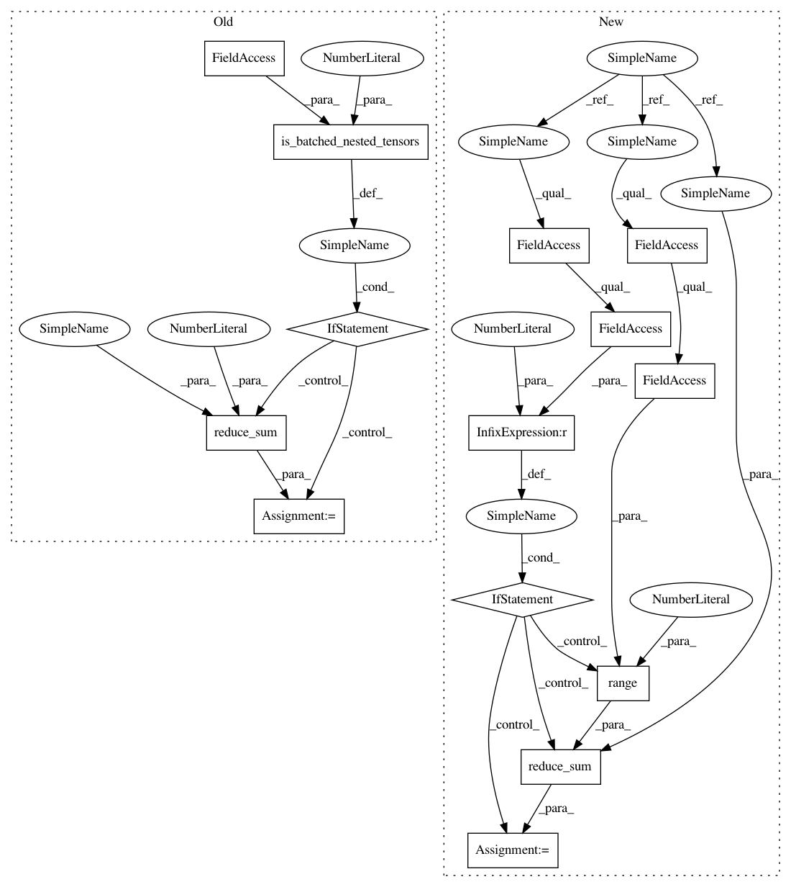

6f3a917e94edf2b96e4c151d698495799be5c9de,tf_agents/agents/sac/sac_agent.py,SacAgent,actor_loss,#SacAgent#Any#Any#,495
Before Change
target_input, time_steps.step_type, training=False)
target_q_values = tf.minimum(target_q_values1, target_q_values2)
actor_loss = tf.exp(self._log_alpha) * log_pi - target_q_values
if nest_utils.is_batched_nested_tensors(
time_steps, self.time_step_spec, num_outer_dims=2):
// Sum over the time dimension.
actor_loss = tf.reduce_sum(input_tensor=actor_loss, axis=1)
reg_loss = self._actor_network.losses if self._actor_network else None
agg_loss = common.aggregate_losses(
per_example_loss=actor_loss,
sample_weight=weights,
After Change
target_q_values2, _ = self._critic_network_2(
target_input, time_steps.step_type, training=False)
target_q_values = tf.minimum(target_q_values1, target_q_values2)
actor_loss = tf.exp(self._log_alpha) * log_pi - target_q_values
if actor_loss.shape.rank > 1:
// Sum over the time dimension.
actor_loss = tf.reduce_sum(
actor_loss, axis=range(1, actor_loss.shape.rank))
reg_loss = self._actor_network.losses if self._actor_network else None
agg_loss = common.aggregate_losses(
per_example_loss=actor_loss,
sample_weight=weights,
In pattern: SUPERPATTERN
Frequency: 3
Non-data size: 14
Instances
Project Name: tensorflow/agents
Commit Name: 6f3a917e94edf2b96e4c151d698495799be5c9de
Time: 2020-06-26
Author: summeryue@google.com
File Name: tf_agents/agents/sac/sac_agent.py
Class Name: SacAgent
Method Name: actor_loss
Project Name: tensorflow/agents
Commit Name: 6f3a917e94edf2b96e4c151d698495799be5c9de
Time: 2020-06-26
Author: summeryue@google.com
File Name: tf_agents/agents/sac/sac_agent.py
Class Name: SacAgent
Method Name: critic_loss
Project Name: tensorflow/agents
Commit Name: 6f3a917e94edf2b96e4c151d698495799be5c9de
Time: 2020-06-26
Author: summeryue@google.com
File Name: tf_agents/agents/sac/sac_agent.py
Class Name: SacAgent
Method Name: alpha_loss